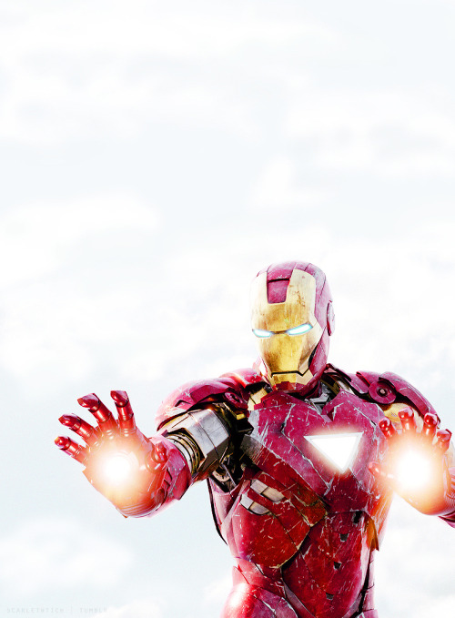

iron man
- identité :Tony Stark
- lieu de naissance : Long Island, New York (New York, Etats-Unis)
- pouvoir : Super armure, très grande intelligence.
- identité : Publiquement connu.
- présent dans : The Incredible Hulk (caméo; 2008); Iron Man (2008); Iron Man 2 (2010); The Avengers (2012); Iron Man 3 (2013); The Avengers : Age of Ultron (2015)
- interprété par : Robert Doney Jr
- Personnage : Tony Stark, playboy, milliardaire, n'est pas seulement l'héritier des usines d'armement de son père, c'est également un inventeur de génie. Alors qu'il est en déplacement en Afghanistan afin de présenter sa dernière création, le missile Jéricho, il est enlevé par des terroristes. Gravement blessé lors de l'attaque, il ne survit que grâce à l'aide d'un scientifique qui le guérira en lui greffant à la poitrine un électro-aimant placé près de son cœur et alimenté par une batterie de voiture.
